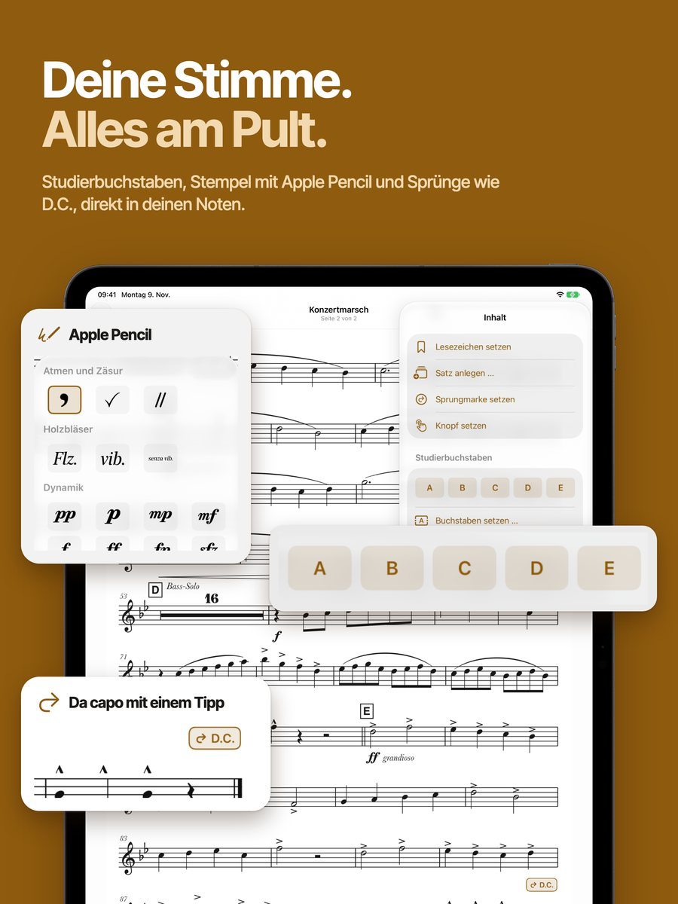
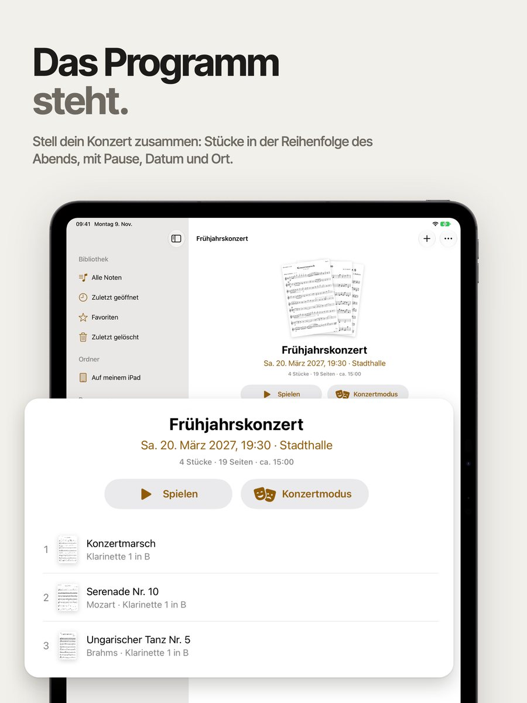
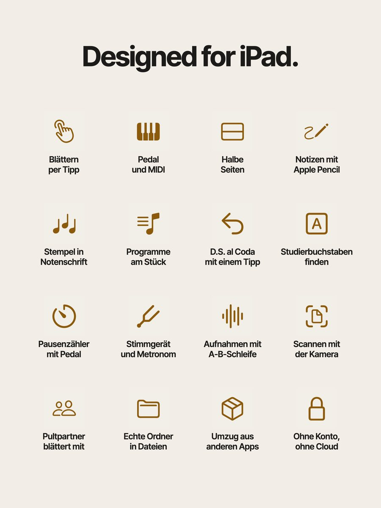
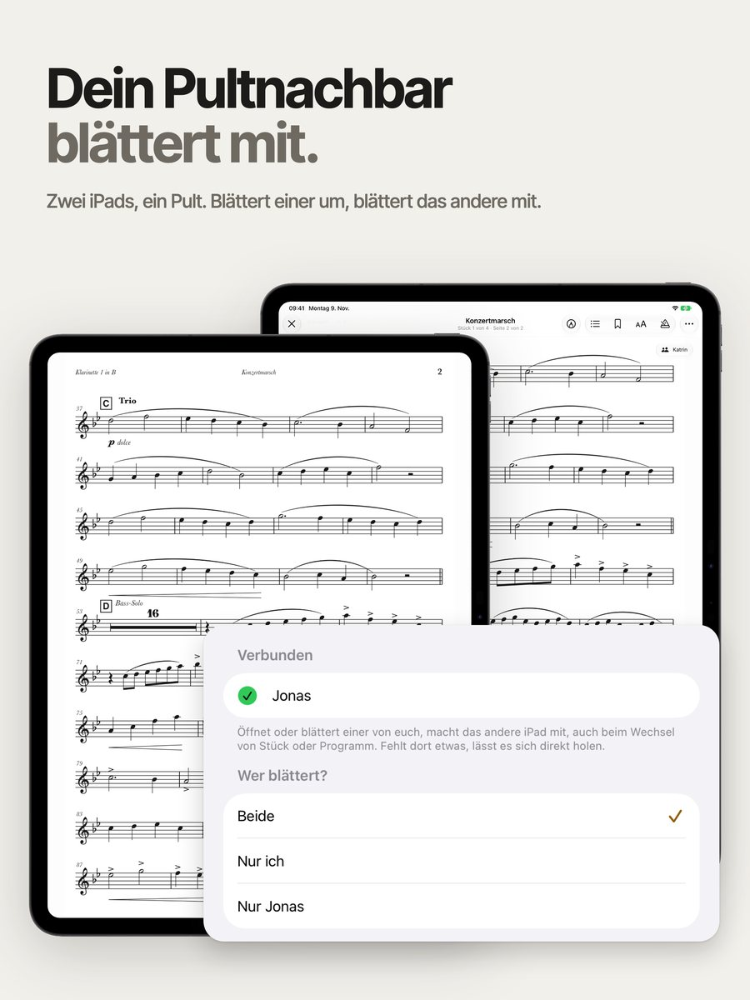
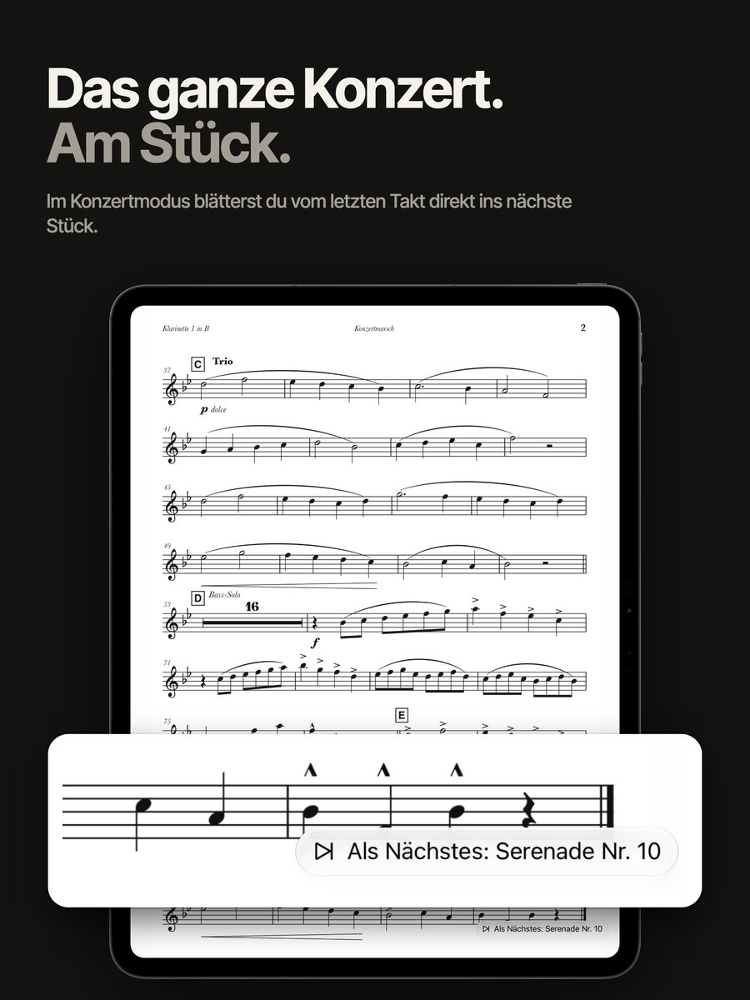

Die Noten-App fürs Orchester auf dem iPad: Ein Tipp blättert um, der Apple Pencil schreibt sofort, und das ganze Konzert läuft am Stück.
Gebaut von einem Holzbläser für sein eigenes Pult.





Tippe rechts für vor, links für zurück, oder tritt aufs Bluetooth-Pedal. Mit halben Seiten siehst du oben schon die nächste Seite, während du unten noch spielst. Auch MIDI, Gamecontroller und die Apple Watch blättern.
Der Apple Pencil schreibt sofort, dein Finger blättert weiter. Deine PDF bleibt unverändert, die Eintragungen liegen in Ebenen darüber. Stempel in echter Notenschrift gibt es für 7 Gruppen, von Holz bis Dirigat.
Leg ein Programm an, und Lupo blättert vom letzten Takt direkt ins nächste Stück. Dein Pultnachbar blättert auf seinem iPad mit, in Gruppen bis zu 8 iPads, ohne Internet.
Hol dir Lupo aus dem App Store, ohne Konto und ohne Anmeldung.
Zieh PDFs aus der Dateien-App oder scanne Seiten mit der Kamera.
Öffne die Stimme und tippe zum Blättern. Ein Pedal weist du mit einem Druck zu.
Kostenlos. Bis zu 3 Stücke hinzufügen, ansehen und darin blättern.
Alles andere, auch Notizen mit Apple Pencil, mit einem einzigen Kauf. Kein Abo, keine Zusatzkäufe, mit Familienfreigabe.
Probier es mit drei Stücken aus, das kostet nichts. Lupo übernimmt PDFs, Angaben, Lesezeichen und Programme aus der Sicherung einer anderen Noten-App.
Niemand außer dir. Lupo hat kein Konto, keinen Server, keine Cloud und keine Analyse. Deine Noten liegen als normale PDFs in echten Ordnern, sichtbar in der Dateien-App.
Bluetooth-Pedale, die sich wie eine Tastatur verhalten, und MIDI-Pedale funktionieren. Du drückst in den Einstellungen einmal auf das Pedal, und Lupo merkt sich die Taste.
Ein iPad mit iPadOS 18 oder neuer. Zum Lesen und Blättern brauchst du keinen Apple Pencil, nur für Eintragungen.
Im Konzertmodus blättert eine aufliegende Hand nicht, und Wischen und Zoomen sind aus. Deine Original-PDFs verändert Lupo nie, und gelöschte Noten liegen 30 Tage im Papierkorb.
Kostenlos mit 3 Stücken, ohne Konto.